Description
Omnerod est un groupe de Métal Progressif basé à Bruxelles, en Belgique.
Histoire
Omnerod est un groupe de Metal Progressif né à Bruxelles en décembre 2009, et après de nombreux changements de line-up, est maintenant le produit de l’acharnement et de l’imagination de Romain Jeuniaux (Guitare et chant), Pablo Schwilden (Batterie), Anthony Deneyer (Guitare et chant), et André Six (basse).
Influencé par les références aussi bien classiques que modernes du metal progressif (Opeth, Between the Buried and Me, Leprous, Devin Townsend), le groupe a sorti son premier album, Ivory Dune, en 2014. Le second opus, du nom d'Arteries et paru en 2019, marque le renouveau du groupe. Avec un line-up complet suite aux arrivées d'André et Anthony, le groupe pourra enfin retranscrire en concert les atmosphères propres à ses deux premiers albums.
Sorties
Vidéos
— YouTube
Logos et icônes
 {kind=link}
{kind=link}
{kind=link}
{kind=link}
Presse
-
Jouant avec brio sur les atmosphères, Omnerod, c'est la version musicale parfaite d'un bad trip... diablement et dangereusement addictif!
Inner-War Reviews , Inner-War Reviews
Musiciens
- Romain Jeuniaux
- Chant et guitare
- Pablo Schwilden Diaz
- Batterie
- Anthony Deneyer
- Chant et guitare
- André Six
- Basse
Contact
- facebook.com/Omnerodofficial/
- Bandcamp
- omnerod.bandcamp.com
- Youtube
- youtube.com/user/omnerod
- Spotify
- open.spotify.com/artist/3BuRXsAWAxpR7TWcuPEkZ2
- Contact
- omnerodofficial@gmail.com